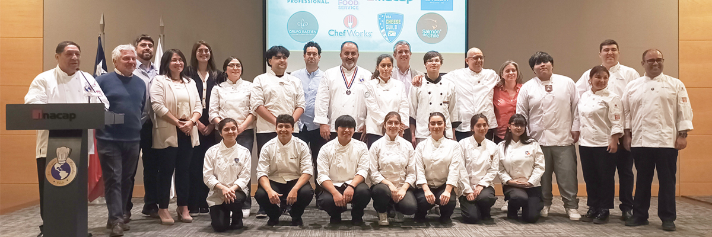

El Inacapino Puerto Montt
La educación es el pasaporte al futuro.
Estudiantes de la Región de Los Lagos reciben Becas Les Toques Blanches en INACAP Puerto Montt
Puerto Montt, marzo de 2025.- En una emotiva ceremonia realizada en INACAP, se otorgaron las Becas Les Toques Blanches a 12 estudiantes de Educación Media Técnico Profesional de la especialidad de Gastronomía, provenientes de distintas comunas de la Región de Los Lagos, como Ancud, Osorno, Quemchi, Frutillar, Quinchao, Puerto Montt, Quellón y San Juan de la Costa.
Desde hace 22 años, Les Toques Blanches impulsa esta iniciativa para apoyar a estudiantes de Educación Media Técnico Profesional en su camino a la Educación Superior. Desde 2024, el programa se desarrolla en la Región de Los Lagos, con la participación de todos los establecimientos técnicos que imparten la especialidad de Gastronomía.
Encabezada por el chef Eugenio Melo, la ceremonia reunió a docentes, estudiantes, sus familias y representantes de las empresas patrocinadoras. El programa de becas incluye clases magistrales, formación y capacitación docente, acercando a los beneficiarios a la industria gastronómica. A lo largo de su historia, ha permitido que más de 400 estudiantes se titulen, generando oportunidades de crecimiento profesional y movilidad social.
El Vicerrector INACAP Sede Puerto Montt, Cristián Osorio, expresó: “desde Inacap estamos contentos de ser parte de este proyecto que Les Toques Blanches lleva bastantes años realizando y que por primera vez se realiza en la región de Los Lagos, apoyado por distintas empresas que contribuyen a la beca. Muy contentos que los estudiantes se incorporen a la educación superior, de los cuales 11 lo hicieron en INACAP.”
El presidente de Les Toques Blanches, el chef Eugenio Melo, quien hizo un recuento de todo lo logrado en estos 22 años del proceso de Becas, se refirió; “estamos muy contentos, fue un gran paso que dimos el año pasado de llegar con los beneficios a la Región de Los Lagos, nuestra Asociación seguirá trabajando por la educación de estudiantes de liceos técnicos, nuestro sueño es llegar a todas las regiones de chile, ya que los talentos están en todas partes y nosotros queremos descubrirlos y ayudarlos”.
La alumna del Liceo EL Pilar de Ancud, Adriana Cardenas, agregó: “esta beca para mi significa la posibilidad de poder estudiar ya que los uniformes y utensilios de cocina son realmente costosos, y con la beca tengo la oportunidad, ya que sin ella creo que no habría sido posible estudiar. Estoy muy agradecida con la asociación y con todas las empresas que hicieron esto posible.”
Con este tipo de iniciativas, INACAP Puerto Montt, junto a Les Toques Blanches y las empresas colaboradoras, reafirman su compromiso con el desarrollo de talentos en la gastronomía, impulsando oportunidades que transforman vidas y fortalecen la industria gastronómica en la Región de Los Lagos.
📸 Momentos Destacados
Una mirada en imágenes a los instantes que marcaron esta jornada inolvidable.